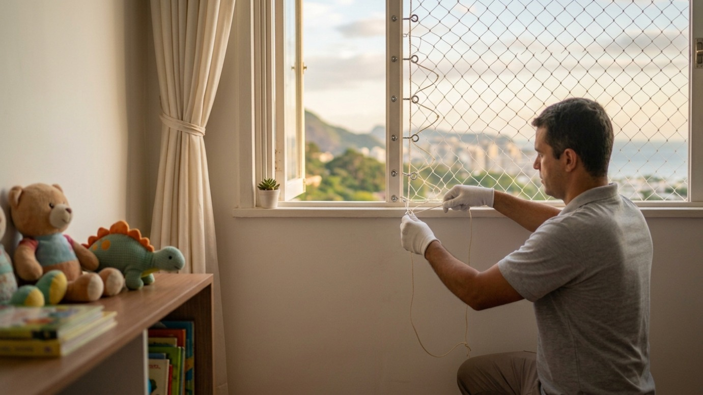
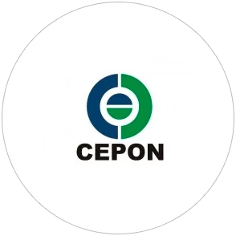
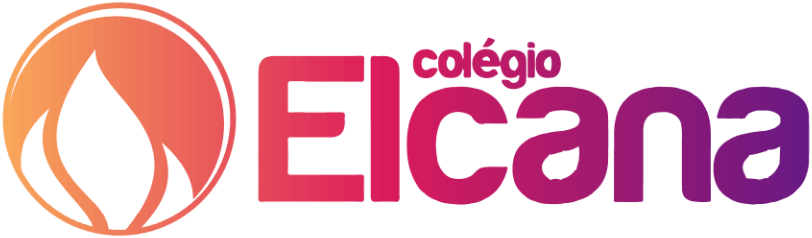
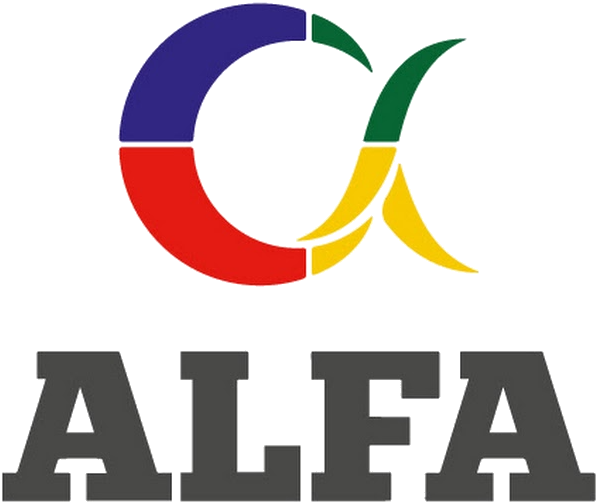
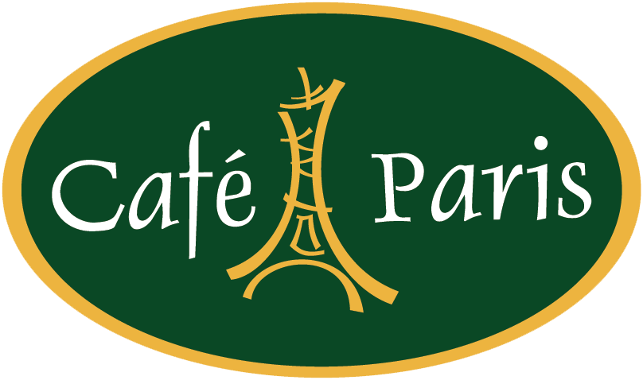

Conheça nossos serviços
Todas as linhas medidas e instaladas pela nossa equipe.
Ver todos os serviços em detalheTodas as linhas medidas e instaladas pela nossa equipe.
Ver todos os serviços em detalheSomos uma empresa catarinense especializada em soluções de proteção sob medida. Cuidamos de todas as etapas do serviço, desde a medição até a instalação, com equipe própria, atendimento direto e responsabilidade técnica.
Conheça nossa história





Cinco etapas, sempre as mesmas, para qualquer linha de produto. Você sabe de antemão quem vem, quando vem e o que já está fechado.
Você manda uma mensagem dizendo o que precisa proteger. Uma foto do vão já adianta metade da conversa.
no mesmo diaVamos ao seu endereço medir cada vão. Visita gratuita, sem taxa de deslocamento dentro de Santa Catarina.
em até 48 hValor final por escrito, com material, mão de obra e prazo. O que foi combinado é o que você paga.
no mesmo dia da visitaEquipe própria, certificada para trabalho em altura. Protegemos o ambiente e devolvemos o espaço limpo.
2 a 4 h por apartamentoGarantia registrada em nota. Enquanto ela valer, voltamos para qualquer ajuste ou reaperto.
de 3 a 5 anosQuer começar pela etapa 01?
Mandar mensagem no WhatsApp